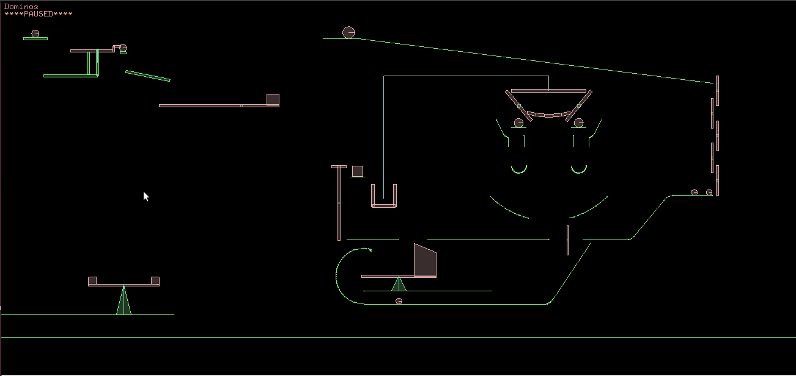
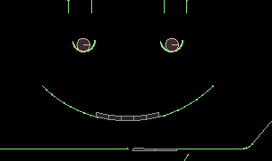

- Introduction
- Present and Original Design
- Interesting Parts of our Design
- Analysis of plots
- Code Profiling Report
- Other differences in release and debug modes
- Call Graphs
-
This report explains the rube goldberg machine [wiki] designed by us, its difference from the original design and the interesting parts in our design. We also analyse our code using various techniques.
-
Following are the images of the present design(left) and the original design(right) respectively :

There are some minor additions to our original design to make our simulation work better. There are just three of them which are listed below:
- We added a vertical wall to support the lever(in the top left corner of the smulation) that pushes the ball.
- In our original design, a ball falls on the wedge(in the bottom left corner) that pushes a block placed on it which takes a projectile path and finally hits a set of multiple levers(on the rightmost part of the simulation). But a part of that motion of the block would not be visible as it would go above the visible area of the simulation. So we included a platform with a ball on it in the topmost part of the simulation. Now the projectile motion of that block becomes small and it hits the ball on the platform which takes forward the rest of the simulation. The image below shows the platform with the ball in the present design which was not present in the original design.
- This one is a very minor change in the rod connected to the pulley which you can figure out by the images of the present design(to the left) and the original design(to the right) shown below:

-
We would like to point out some parts of our simulation design that make it interesting.[hcv] [hrw]
- There is a revolving platform on which a ball comes from its upper left side and it releases it towards its bottom right side.

- We think that this is the most interesting part of our simulation. There are two balls kept nearby each other on a horizontal surface and there is a vertical lever to the right. When the lever hits one of the balls, that ball(which is towards the right side) gets into motion and hits the other ball which goes forward and creates path for it to go forward. The images below explain the scenario:
- This is also an interesting part of our design. The ball(which is below) hits the wedge at a perfectly appropriate time which lifts the other part of wedge and creates a straight horizontal path for another ball(which is above).
- Our Rube Goldberg Machine ends by creating a smiley. This, we think, is another interesting aspect of our simulation. 
-
[matplotlib]
- Analysis of plot01(image below) : [Average (StepTime and LoopTime over reruns) vs number of iterations]
- The stepTime and looptime are very close to each other. This is meaningful because the only major process that is happening inside the loop is Step function and apart from the step function, only a few addition, subtraction and reading is happening.
- Analysis of plot02(image above) : [Average (StepTime, CollisionTime, Velocity Time, Position update time over reruns) vs number of iterations]
- In this case, an important thing to notice is that the collision time, velocity time and position update time add upto the step time. This proves that major things which happens inside the step function are collision handling, velocity update handling and position update handling.
- The ratio of the time taken by collision handling, velocity update handling, and position update handling is approximately same for different values of iteration number. Which is to say that, if more collisions are happening, then there is a greater need to update velocities and positions, which makes sense.
- Analysis of plot03(image below) : [Average of step time and looptime over iteration values vs rerun number]
- The averages of looptime and steptime are same because of reasons mentioned earlier.
- The avg looptime over iteration values changes slightly for different rerun index. The important thing to notice that it is not constant. And the most likely reason for this is the other processes that runs in CPU during the execution of this program. So say when the nth iteration is running, the load on CPU might increase because of which the avg of step time over iteration values might increase for that particular rerun number. This justifies rerunning the program many times.
- Analysis of plot04(image above) : [Average of (step time, collision time, position update time, velocity update time over iteration values) vs the rerun number]
- The analysis is very similar to the previous case. Again here the point that the sum of position update time, velocity update time, and collision update time is almost equal to step time and that the ratios are similar.
- Analysis of plot05(image below) : [Average of iteration values over reruns (with error bars) vs the iteration values]
- The new feature is the error bars over plot1. The error decreases as the iteration values increases. On closely observing the step times from the actual data files, many a times the step times initially are very high and many times they are pretty low. This is perhaps because of the way in which the OS allocates CPU to the program. If the CPU is busy then the program gets less CPU initially and it increases into the program. However if the CPU is free then the program quickly gets sufficient CPU power. However when we consider higher iteration values, then the initial disturbance gets averaged out due to which the error is not so visible.
- Analysis of plot06(image above) : [frequency of a particular step time vs the step time for iteration value 29]
- The step time for different reruns are almost in a close range of 0.045ms to 0.050 ms. Approximately 70% of values are in this range. However in some exceptional cases, the step time came out to be upto 0.1 ms where the CPU load might have increased.


-
We profiled the code using gprof for 1L iterations in both release-mode and debug-mode.
First, let us analyze the report of debug-mode.
- First of all, we observe that simple functions like operator-, operator *, b2Vec2 (function for creating a new vector) are taking the maximum percentage of time. This shows that Box2D is a very computationally heavy process which relies on a lot of computation. In 1L steps , the b2Vec2 constructor is called a whopping 374743427 times, which means that it is called 3.7K times in each call of Step function.
- SolveVelocityConstraints of the b2RevoluteJoint class takes up a lot of time, perhaps because implementing joints are computationally expensive and required continued operations to find out their position. Morover our simulation uses revoluteJoints in many places
- Functions like solve of b2World class (which finds islands, integrates and solves constraints and solves position constraints) , solveVelocityConstraints of b2ContactSolver(which solves the velocity constraints, the tangential forces on body, friction etc), solveTOI of b2World class (which finds Time of Impact contacts and solve them) also takes up a lot of time.
- Again operations like finding max, finding min, taking the cross product or taking dot products of vectors takes up quite a lot of time despite being small functions sheerly because of the large number of times it is being called.
- The first thing we notice is that most of the functions which consumed a lot of time in debug-mode are absent in the release-mode profiling. So operator-, operator*, b2Vec2, b2Max have most likely been made inline by the compiler.
- The level of inlining is clear from the fact that 186 functions were detected by gprof in the debug-mode, while only 53 functions were detected by gprof in the release-mode.
- The percentage of time taken by SolveVelocityConstraints of b2ContactSolver is here the most time consuming function and it is taking 20% time in release-mode ; It was taki/ng just 5% time in debug-mode. This is most probably because when functions are made inline, then the time taken taken by those functions earlier are now counted in the function from where these functions were being called. The same reasoning perhaps applies for all the functions which are now new in the list of functions which are consuming high percentages of time taken by the program. Such things happens for many functions.
- It is notable that the Step function in the release-mode is not present at all in the debug-mode. On seeing the code for step function, we find out that step function calls many functions and does nothing else. Due to which its presence in debug-version was negligible; However it appears in the release-mode because of inlining of the functions which step function calls.
-
There is a marked difference in the time taken by code in the release and debug mode. The time taken by the code in the debug-mode is 18.29s, while the time taken in release-mode is just 1.942s. (These are values for 100K steps). This indicates that the code written by us are really inefficient as compared to what the compiler gives us.
The size of the executable in debug-mode is 1.4M, while in release-mode it is just 690K.
-
[Gprof2Dot]
The callgraphs for debug and release mode respectively :
The call graphs represent the callee-caller relations. It shows all the functions that called a particular function
and also all the functions that are called by it.
For release mode, we can see that there are no arcs coming out of
any functions which implies that all the callee functions are made
inline to the caller functions , where as there are a large number
of function calls which are present in callgraphs for debug mode.
References